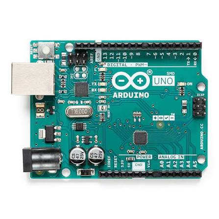
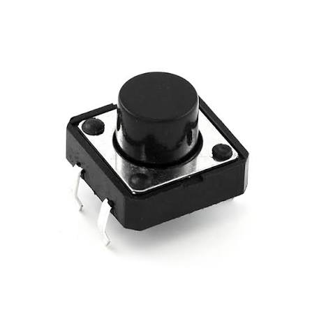
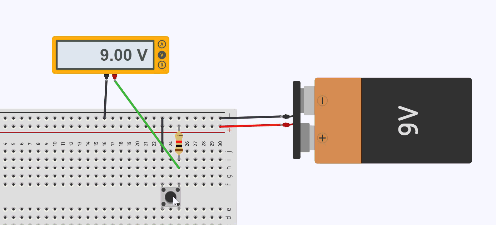
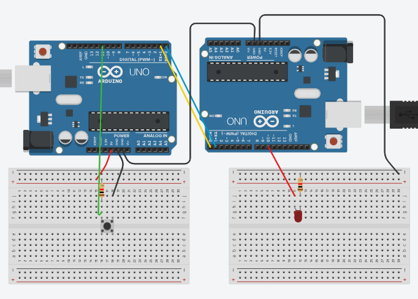

🔌 درس اليوم: التحدث مع الأصدقاء عبر السلك — UART Serial
🤔 ما هو UART؟ ببساطة!
الـ UART هو بروتوكول (طريقة) يتحدث فيها Arduino مع Arduino آخر — أو مع الكمبيوتر — عبر سلكين فقط:
| السلك | الوظيفة |
|---|---|
| TX (Transmit) | يرسل الرسالة 📤 |
| RX (Receive) | يستقبل الرسالة 📥 |
💡 القاعدة الذهبية: TX للأول ← نوصله ب ← RX للثاني (و العكس صحيح!)
🧠 ما نعرفه بالفعل
Serial.begin(9600); // نفتح "القناة" بسرعة 9600
Serial.print("مرحبا"); // نرسل نص
Serial.println("!"); // نرسل نص + سطر جديد
Serial.available(); // هل وصلت رسالة؟ (نعم/لا)
Serial.read(); // نقرأ حرفاً واحداً
🎯 تجربة اليوم: "التحكم عن بُعد بالزر"
الفكرة
فريق من شخصين. Arduino A لديه LED. Arduino B لديه زر ضغط.
عندما يضغط الشخص ب على الزر → يرسل إشارة عبر السلك → Arduino A يستقبلها ويشغل/يطفي LED!
🛠️ القطع المطلوبة
| القطعة | العدد | ملاحظة |
|---|---|---|
| Arduino Uno | 2 | واحد للمرسل، واحد للمستقبل |
| LED | 1 | على Arduino A |
| مقاومة 220Ω | 1 | للLED |
| زر ضغط (Push Button) | 1 | على Arduino B |
| مقاومة 10KΩ | 1 | للزر (سحب للأسفل) |
| أسلاك توصيل | 5+ | للتوصيل الداخلي والخارجي |
| كابل USB | 2 | لرفع الكود على كل Arduino |

🔗 التوصيل بين الـ Arduinoين
Arduino A (المستقبل + LED) Arduino B (المرسل + زر)
TX (Pin 1) ─────────────────► RX (Pin 0)
RX (Pin 0) ◄──────────────── TX (Pin 1)
GND ───────────────── GND
⚠️ مهم جداً: اربطوا GND مع GND! وإلا لن يفهم أحد أحداً.
🔌 التوصيل الداخلي
Arduino A — المستقبل (الـ LED)
| المكون | التوصيل |
|---|---|
| الساق الطويلة للـ LED (+) | Pin 10 عبر مقاومة 220Ω |
| الساق القصيرة للـ LED (−) | GND |
Arduino B — المرسل (الزر)
الزر موصول بتقنية السحب للأسفل (Pull-Down):

| المكون | التوصيل |
|---|---|
| ساق الزر الأولى | Pin 10 |
| ساق الزر الثانية | 5V |
| مقاومة 10KΩ | بين Pin 10 و GND |
 |
🧠 "سحب الجهد للأسفل" (Pull-Down)؟
المقاومة 10KΩ تسحب Pin 10 نحو الأرض (GND) باستمرار. لذلك عندما لا يُضغط الزر، يقرأ Arduino القيمة LOW.
عند الضغط على الزر، يتصل Pin 10 مباشرة بـ 5V، فيقرأ Arduino القيمة HIGH.
بدون هذه المقاومة، سيكون Pin 10 "طافياً" (غير محدد) عند عدم الضغط، وقد يقرأ قيماً عشوائية!
🖼️ مخطط التوصيل الكامل

💻 الكود — Arduino A (المستقبل + LED)
مهمته: يستمع للإشارات الواصلة ويشغل/يطفي LED على Pin 10.
const int ledPin = 10; // الـ LED موصول على Pin 10
void setup() {
Serial.begin(9600); // افتح القناة بنفس السرعة!
pinMode(ledPin, OUTPUT); // LED كمخرج
digitalWrite(ledPin, LOW); // ابدأ بالـ LED مطفي
}
void loop() {
// هل وصلت رسالة؟
if (Serial.available() > 0) {
char cmd = Serial.read(); // اقرأ الحرف الواصل
if (cmd == 'H') {
digitalWrite(ledPin, HIGH); // 💡 شغّل النور!
Serial.println("استلمت: H → LED يعمل ✅");
}
if (cmd == 'L') {
digitalWrite(ledPin, LOW); // 🌑 طفّي النور!
Serial.println("استلمت: L → LED مطفي ❌");
}
}
}
💻 الكود — Arduino B (المرسل + زر)
مهمته: يقرأ حالة الزر ويرسل 'H' أو 'L' عند الضغط.
const int btnPin = 10; // الزر موصول على Pin 10
// متغيرات لتتبع حالة الزر
int btnState = 0;
int lastBtnState = 0;
void setup() {
Serial.begin(9600); // افتح القناة بنفس السرعة!
pinMode(btnPin, INPUT); // الزر كمدخل
}
void loop() {
btnState = digitalRead(btnPin); // اقرأ حالة الزر
// إذا تغيرت الحالة (انتقال من LOW إلى HIGH)
if (btnState == HIGH && lastBtnState == LOW) {
// الزر مضغوط الآن → أرسل أمر التشغيل
Serial.println('H');
Serial.println("أرسلت: H → شغّل LED! 📤");
delay(200); // انتظر قليلاً (منع الارتداد)
}
// إذا تغيرت الحالة (انتقال من HIGH إلى LOW)
if (btnState == LOW && lastBtnState == HIGH) {
// الزر مُرفوع الآن → أرسل أمر الإطفاء
Serial.println('L');
Serial.println("أرسلت: L → طفّي LED! 📤");
delay(200); // انتظر قليلاً (منع الارتداد)
}
lastBtnState = btnState; // احفظ الحالة الحالية للمقارنة في اللفة القادمة
}
🔄 خطوات التجربة
| الخطوة | ماذا تفعل |
|---|---|
| 1 | صِل الأسلاك TX↔RX و GND↔GND بين الـ Arduinoين |
| 2 | ركّب الـ LED مع مقاومة 220Ω على Arduino A (Pin 10) |
| 3 | ركّب الزر مع مقاومة Pull-Down 10KΩ على Arduino B (Pin 10) |
| 4 | ارفع كود Arduino A على الأول، وكود Arduino B على الثاني |
| 5 | افتح Serial Monitor على كلا الحاسبين (اختياري) |
| 6 | اضغط الزر على Arduino B → هل أنار LED على Arduino A؟ |
| 7 | ارفع يدك عن الزر → هل انطفأ LED؟ |
❓ أسئلة للنقاش
- ماذا يحدث لو لم نربط GND مع GND بين الـ Arduinoين؟
- لماذا يجب أن تكون السرعة
9600في الطرفين؟ - ماذا يحدث إذا أزلنا مقاومة الـ 10KΩ (Pull-Down) عن الزر؟
- لماذا نستخدم
lastBtnStateفي كود المرسل؟ ما الذي سيحدث بدونه؟ - هل يمكننا عكس المنطق: نجعل الزر يُرسل عند الرفع بدلاً من الضغط؟ كيف؟
🏆 التحدي الإضافي (لمن ينتهي مبكراً)
التحدي 1: التحكم المتبادل ⭐
أضف زراً على Arduino A وLED على Arduino B.
الآن كل Arduino يستطيع التحكم بنور الآخر!
التحدي 2: زر التبديل (Toggle) ⭐⭐
بدلاً من إرسال عند الضغط وعند الرفع، اجعل الزر يُرسل 'H' عند أول ضغطة فقط.
الضغطة الثانية ترسل 'L'. وهكذا: ضغطة = تشغيل، ضغطة = إطفاء.
التحدي 3: رسالة كاملة ⭐⭐⭐
عند الضغط على الزر، أرسل كلمة كاملة مثل
"LED_ON"أو"LED_OFF"بدلاً من حرف واحد.
تلميح: استخدمSerial.print()بدلاً منSerial.println()للأحرف، ثم أرسل'\n'في النهاية.
✅ قائمة المراجعة (Checklist)
- الأسلاك موصلة صح (TX↔RX)
- GND موصول بالاثنين
- الكود رُفع على كل Arduino بالشكل الصحيح
- الاثنان يعملان بنفس السرعة في
Serial.begin(9600) - الـ LED على Arduino A موصول على Pin 10 عبر مقاومة 220Ω
- الزر على Arduino B موصول على Pin 10 مع مقاومة Pull-Down 10KΩ
- LED ينور عند ضغط الزر على Arduino B
- LED يطفأ عند رفع الزر
🔧 نصائح سريعة لاستكشاف الأخطاء
| المشكلة | الحل المحتمل |
|---|---|
| LED لا يستجيب أبداً | تأكد من توصيل GND المشترك بين الـ Arduinoين |
| LED يومض بشكل عشوائي | تأكد من وجود مقاومة Pull-Down 10KΩ على الزر |
| إشارات متكررة عند ضغطة واحدة | أضف delay(200) بعد الإرسال |
| رسائل غريبة في Serial Monitor | تأكد من تطابق السرعة (9600) في كلا الطرفين |
| LED لا يضيء أبداً | تأكد من توجيه LED الصحيح (الساق الطويلة = الموجب) |
🎉 تهانينا! لقد بنيتم أول شبكة تواصل بين جهازين باستخدام زر حقيقي!
هذا أساس كل شيء: الريموت كنترول، البلوتوث، الـ WiFi، حتى الإنترنت!